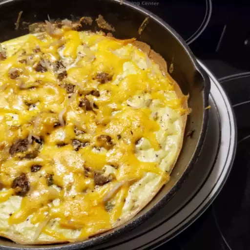

Potato & Cheese Frittata

Description:
This potato and cheese frittata is great by itself or with some fruit on a Sunday morning.
A personal favorite, this is what my Nonna used to make for me when I was a kid and I've loved it ever since!
Ingredients:
- 2 tablespoons of olive oil
- 2 large russet potatoes, peeled and shredded
- 1 medium onion, diced
- salt and pepper to taste
- ½ cup shredded Parmigiano cheese
- 4 eggs, beaten
Steps:
- Preheat the oven to 200° C (400° F)
- Heat oil in a 12 inch skillet over medium-high heat.
- When the skillet is hot, add the potatoes, and fry until crispy and golden, about 15 minutes.
- Reduce heat to medium, and add onions. Cook, stirring, until softened.
- Season with salt and pepper. Pour eggs over the potatoes and onions.
- Place the skillet in the oven for about 10 minutes, or until eggs are firm.
- Remove from the oven, and sprinkle shredded cheese over the top.
- Return to the oven for about 5 minutes, or until cheese is melted.
You're done! Enjoy your piping hot frittata, just how Nonna used to make!